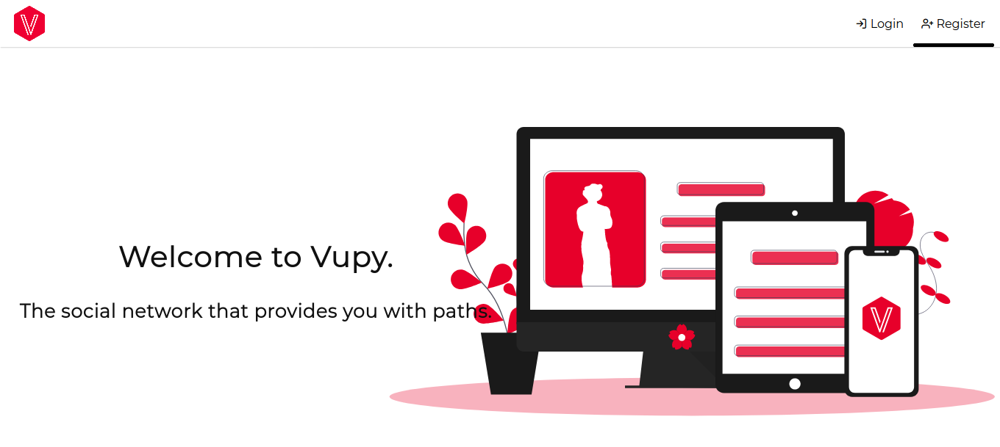
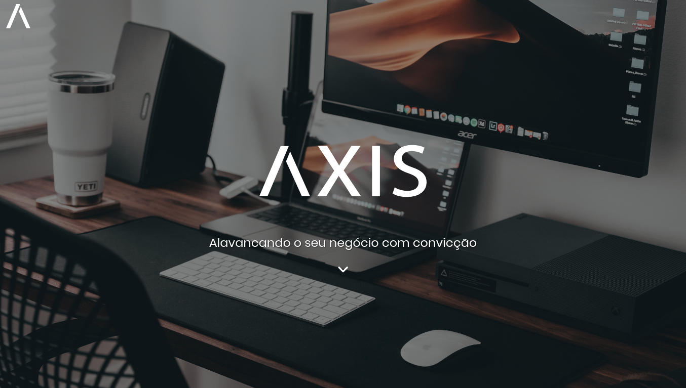

Miguel Vieira Colombo
Conheça me, veja o que posso lhe proporcionar como desenvolvedor e como pessoa.
Quem sou eu
Meu nome é Miguel atualmente eu sou um bacharelando em Ciência da computação (BCC) no UNIVEM, além disso, sou um desenvolvedor de site e aplicativos, com o objetivo de tornar a tecnologia e seus feitos cada vez mais acessíveis e interativos, de uma modo simples, rápido e prático. Afinal de contas e tecnologia tem como objetivo facilitar e inovar os meios em que pessoas possam obter o que elas desejam.
O que eu sei
- Python
- Está é a linguagem que eu mais conheço e gosto de trabalhar estudo-a desde agosto de 2016 com ênfase na parte web mais especificamente com Django e WebSockets.
- JavaScript
- Outra linguagem de que gosto muito, e venho me aperfeiçoando a cada dia. Comecei a estudá-la em 2017 também para gerencia do DOM (Document object model), e evitar recarregamentos desnecessários da página.
- Sass/SCSS
- Não que não goste do CSS, mas com o SCSS fica extremamente compacto os estilos que serão renderizados pelo navegador.
- CSS
- NodeJs
- PHP
- C/C++
- Anduino (C++)
- Flutter
- Desde Março de 2019 quando eu conheci o Flutter, este framework se tornou o meu favorito para criação e desenvolvimento de app para Ios e Android, hoje consigo fazer a gerencia dos estados (States) por meio do Mobx (Pacote do Flutter), que facilita a manipulação dos widgets sem redesenhar ta tela.
- Vue
- Este é o framework front-end que eu mais utilizo em meus projeto, por causa da sua simplicidade e performance.
- React
- Ainda não sou muito avançado, porém sou capaz de criar e desenvolver projetos em react sem problema algum.
- ExpressJS
- Terminal (Linux)
- Visual Code
- Android Studio
- Illustrator
- Figma
- CassandraDB
- MySQL
- SQLite
- MongoDB
- Linux
- Manjaro e Ubuntu são as minhas distros preferidas. Mas gosto de todas sem exceção.
- PWA
Projetos
Atualmente maior parte dos meus projetos são privados, entretanto posso-lhe mostrar um projeto online de rede social desenvolvida em Python com Django, Flutter, SCSS e Vue Vupy, essa rede social foi projetada e desenvolvida durante 2019 como um trabalho de TCC (trabalho de conclusão de curso) da ETEC Antonio Devisate adjunto de outras duas pessoas
Este mesmo projeto a Vupy foi refeita sendo chamada de VSN (Vupy Social Networking). Este projeto ainda não está online, porém é possível vê-lo pelo Twitter
Um dos meus últimos projetos foi a Axis um site para uma futura empresa que prestará serviços de marketing digital, SEO, Social mídia e entre outras coisas
Além desse projeto lhe convido à visitar meu Github e conhecer mais alguns dos meus projetos que estão em público.
Contatos